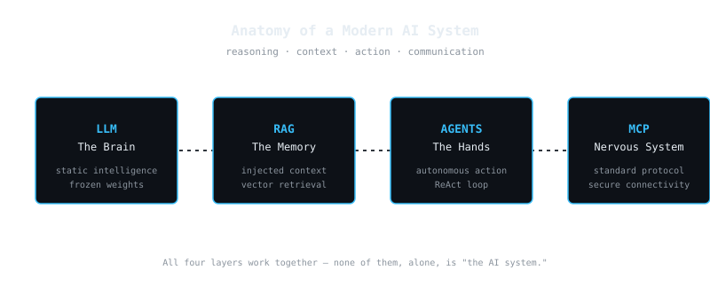
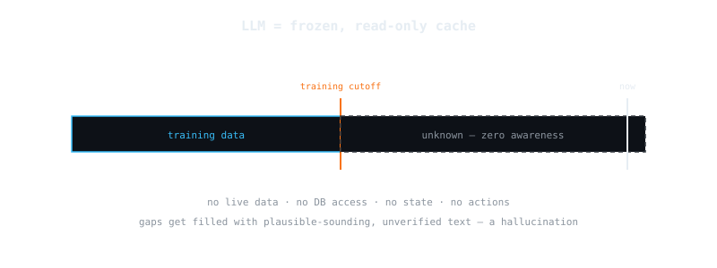
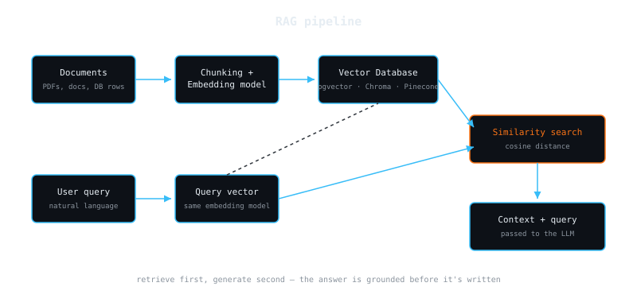
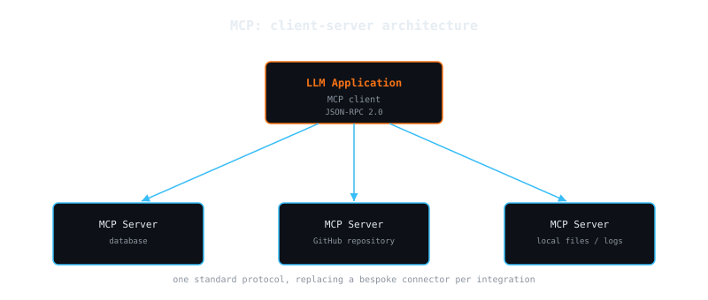
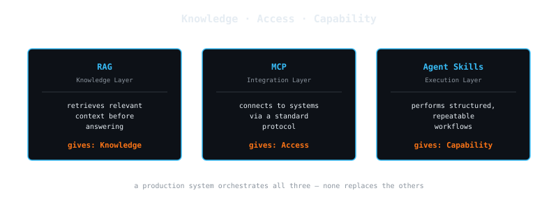

If you spend any time on tech LinkedIn or X, you have likely seen a flood of content reducing Artificial Intelligence to "vibe coding" or writing clever prompts. But as software engineers, systems architects, and Tech Leads, we know that sending a string to a black-box API is not how you build scalable, production-ready enterprise applications.
A standalone Large Language Model (LLM) cannot solve complex enterprise problems. It doesn't have access to your live databases, it doesn't know your business logic, it has zero state persistence, and it cannot execute actions.
To build real value, we need to look past the foundational model and focus on the system architecture surrounding it. To make sense of this rapidly evolving ecosystem, it helps to map a complete, enterprise-grade AI system to a human analogy: an intelligent core (the Brain), a contextual memory layer (Books), an execution loop (Hands), and a standardized communication framework (the Nervous System).
Let's break down the anatomy of a modern AI system, looking past the hype and focusing on the low-level mechanics and engineering trade-offs of each component.

1. The LLM (The Brain) — Static Intelligence
In any modern AI system, the LLM acts as "The Brain" — the core intelligence layer responsible for reasoning and text generation, trained on massive historical datasets.
However, to architect systems around it, we must understand exactly what this "brain" is under the hood.
The low-level reality
An LLM does not "think," nor does it possess a database of facts inside its neural network. At its core, an LLM is a massive, frozen file of mathematical weights. When you send a prompt to a model, you are passing data through a complex mathematical function (the Transformer architecture) that calculates a probability distribution to predict the next most likely word token.
From a systems engineering or SysAdmin perspective, you should treat a raw LLM like a massive, read-only cache that was completely frozen on the day training was completed.
The architectural limitations
Because the model is a static snapshot of past data, it introduces two distinct architectural challenges:
- No live data — if a model's training data cut off six months ago, it has zero awareness of anything that happened yesterday, let alone a real-time bank transaction or a user's current session state.
- Hallucinations — when an LLM encounters a gap in its knowledge, it doesn't return a
404 Not Found. Because its fundamental mandate is to predict the next logical token, it will mathematically generate text that sounds perfectly plausible but is factually incorrect. It optimizes for linguistic coherence, not factual accuracy.

2. RAG (Brain + Memory) — Injected Context
To solve the limitations of static intelligence without spending millions of dollars re-training or fine-tuning a model, we use Retrieval-Augmented Generation (RAG). If the LLM is a brilliant brain taking an exam, RAG is the act of handing that brain an open textbook containing the exact information it needs right before it answers.
The low-level reality
RAG introduces a data ingestion and retrieval pipeline into your architecture. Instead of expecting the LLM to know the answer, your application fetches the relevant context from your private data sources first, and then passes both the context and the user query to the LLM.
As an engineer, you need to understand the underlying mechanics of this pipeline:
- Embeddings — your unstructured enterprise data (PDFs, documentation, database rows) is broken down into chunks and passed through an embedding model. This model converts text into a high-dimensional vector (a string of numbers) that represents its mathematical semantic meaning.
- Vector databases — these vectors are stored in specialized databases (e.g., pgvector, Chroma, Pinecone).
- Semantic search — when a user asks a question, their query is also converted into a vector. Your system performs a similarity search (like Cosine Distance) against the Vector DB to find the chunks of data closest in meaning to the user's request.

3. AI Agents (Brain + Hands) — Autonomous Action
While RAG makes the system factually accurate, it is still passive — it only responds to static inputs. To build truly disruptive applications, the system needs the ability to execute tasks. This introduces AI Agents, which represent the "Hands" of the system.
The low-level reality
An AI Agent shifts the paradigm from simple question-answering to autonomous execution. It achieves this by utilizing a design pattern known as the ReAct (Reasoning and Acting) loop.
Instead of generating a final answer immediately, the LLM is prompted to output its "Thought," define an "Action" (calling an external tool), and wait for the "Observation" (the result of that tool).

The engineering trade-offs
While highly powerful, Agents introduce massive challenges that Tech Leads must carefully architect for:
- Latency — a single user request might trigger 4 or 5 internal reasoning loops. If each LLM API call takes 1.5 seconds, your user is now waiting nearly 10 seconds for a response.
- Compounding token costs — you must pass the entire conversation history, thoughts, and tool outputs back into the LLM on every single turn of the loop, making token consumption grow exponentially.
4. MCP (The Nervous System) — The Standardized Communication Protocol
If the LLM is the brain, RAG is the memory, and Agents are the hands, how do they all securely communicate with your enterprise infrastructure? This is where the industry has historically struggled, and it is where the concept of the Model Context Protocol (MCP) enters as the "Nervous System."
The low-level reality
Launched open-source by Anthropic, MCP is an open, standardized architectural protocol — built on top of JSON-RPC 2.0 — that establishes a secure client-server relationship between LLM applications and data sources.
Think of MCP exactly how a SysAdmin views REST, gRPC, or POSIX standards. Before MCP, if you wanted an AI agent to read a database, check a GitHub repository, or parse local logs, you had to write a bespoke, fragile API connector for each specific use case.

The Architectural Matrix: Knowledge vs. Access vs. Capability
When designing enterprise AI, you will often hear RAG, MCP, and Agent Skills mentioned in the same breath. However, as architects, we must avoid treating them as interchangeable buzzwords. They solve fundamentally different engineering problems, and understanding where each belongs in your stack is critical.
To design an agent that moves beyond a basic chat interface and actually executes enterprise workflows, you need to map them to three distinct layers:
- RAG (The Knowledge Layer) — gives the agent knowledge. It resolves the problem of finding the right context and grounding responses in trusted data to eliminate hallucinations.
- MCP (The Integration Layer) — gives the agent access. It resolves the problem of connectivity, replacing fragile, custom-built API integrations with a secure, standardized protocol.
- Agent Skills (The Execution Layer) — gives the agent capability. This is the runtime configuration — the predefined prompts, specific tools, and structured workflows that allow an agent to perform repeatable, reliable actions.
| Layer | Component | Core function | What it gives the agent |
|---|---|---|---|
| Knowledge | RAG | Retrieves relevant context before answering | Knowledge |
| Integration | MCP | Connects to systems via a standard protocol | Access |
| Execution | Agent Skills | Performs structured, repeatable workflows | Capability |

The real architectural value is not in choosing one over the other. A robust, production-ready system orchestrates all three: RAG retrieves the right information, MCP connects to the right systems, and Skills execute the right actions.
Conclusion: Engineering the Future of AI
Building enterprise-grade AI is not about writing a lucky prompt. It is about systems engineering. We must manage the static limitations of the LLM, architect efficient retrieval pipelines with RAG, monitor the compounding latency of Agents, and enforce standardized communication through protocols like MCP.
Once we control the architecture, the next major challenge is ensuring that our development workflows scale. How do we ensure that agents build exactly what we want without spinning into chaotic code generation?
In my next article, I will dive into Spec-Driven Development (SDD) — the engineering methodology that leverages precise software specifications to move AI coding from an unpredictable guessing game into an automated, highly disciplined assembly line.
Stay tuned, and let's keep engineering.